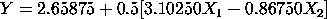

|
5.
Process Improvement
5.6. Case Studies 5.6.1. Eddy Current Probe Sensitivity Case Study
|
|||
| Goals of This Case Study |
The output and goals of this case study were:
|
||
| Most Important Factors and Prediction Equation |
The various dex plots and Yates analysis showed that the number
of turns (X1) and the winding distance (X2) were the most
important factors. The Yates analysis gave us a good prediction
equation for the data
 |
||
| Best Settings |
At this point it is good to review the conclusions
regarding goal 2 (determine best settings) for
this case study. If we are trying to determine
settings of the factors which maximize the
response, as in the this eddy current case study,
then there are several approaches which lay claim
title to yielding "best" settings:
Methods 1 and 3 yield answers within the current -1 and +1 domain of the data. Method 2 yields an answer that frequently extrapolates beyond the domain of the executed experiment This eddy current case study was drawn from an research and development environment, and so heavier emphasis was placed on understanding and insight (that is, what factors are important) than with best settings. On the other hand, in a production environment, both goals are still in play, but the emphasis goes slightly heavier to the best settings goal as opposed to the important factors goal. In a general engineering environment (either research and development or production), the above two goals frequently have, in practice, much greater interest to the engineer than the third enumerated goal (good model/prediction equation). What then, are the final recommended best settings for this case study, and how do they compare with one another? |
||
| Average Based |
From the main effects plot (or equivalently
from the signs of the estimated effects), it
was seen that the comparison of the average
response for each individual factor at the -1
and + levels, and the choosing of the setting
that yielded the larger average response
yielded
From step 1 of the contour plot analysis, we saw that the best of the four vertices for the two dominant factors (X1 and X2):
which agrees in part with the above seetings but leaves the question of X3 undone. |
||
| Model Based |
Also from the contour plot, we were able to
draw 2-factor model-based contour curves which yielded
as the global estimate of the best setting (with the setting of X3 left undetermined). |
||
| Data Based |
Finally, a different, assumption-free, and
simple (= no estimation and no modeling)
data-based estimate of the best settings is
always of interest to pursue. If one takes the
decidedly anti-statistical attitude that all of
the previously-described statistical estimation
and statistical modeling is nice but is a bit
artificial and indirect, and that the only
thing real is the eight data values on hand, then
an argument could be forwarded that a simple
sort of the eight data values (carrying along the three
factor settings) should yield interesting
information and optimal values all by itself.
Proceeding in this fashion, such a simple sort
(smallest to largest) of the data was carried
out, yielding:
Y X1 X2 X3
Probe Number Winding Wire
Impedance of Turns Distance Guage
-------------------------------------------
0.55 -1 +1 -1
0.67 -1 +1 +1
1.51 -1 -1 +1
1.70 -1 -1 -1
3.39 +1 +1 -1
4.29 +1 +1 +1
4.57 +1 -1 -1
4.59 +1 -1 +1
The following conclusions can be drawn from the sort:
|
||
| Comparing Best Settings: Average Based Versus Data Based |
Based on the averages, the derived best setting was (+ -,+).
Based on the sorted data, the derived best setting was (+,-,+).
Fortuitously in this case, the two different approaches yielded
the same conclusion, and so our final unambiguous estimate for
the best setting within the domain of the data is
Because two different methods converged to the same conclusion, our confidence in the validity of that conclusion is greatly enhanced. In other case studies, the two approaches may not agree in all of the settings. In this author's experience, however, the two methods will always agree for the important factors (factors X1 and X2 here) and disagreement (if any) shows up in the unimportant factors. In such cases, the recommendation course of action is to
|
||